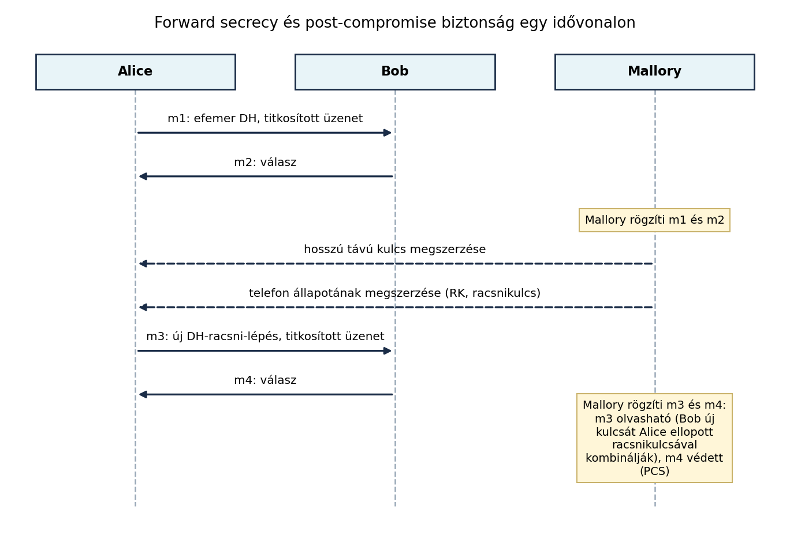

Képzeljünk el egy támadót, aki hónapokon át rögzíti egy vállalat teljes hálózati forgalmát. Egy nap megszerzi a vállalat TLS-termináló szerverének hosszú távú titkos kulcsát. Ha a szerver régi, RSA-alapú kulcscserét használt, a támadó utólag az összes rögzített munkamenetet visszafejtheti: a munkamenetkulcsokat ugyanis a hosszú távú kulccsal titkosítva küldték el. Ha viszont a szerver efemer Diffie–Hellmant (DHE vagy ECDHE) használt, a hosszú távú kulcs csak a hitelesítésre szolgált; a munkamenetkulcsok rövid életű, kicserélés után törölt titkokból származtak. Ekkor a korábbi forgalom titkos marad.
Ez a különbség a forward secrecy lényege. A kérdés azonban nem áll meg itt: mi van akkor, ha a támadó nem egy hosszú távú kulcsot, hanem egy telefon teljes memóriáját szerzi meg, benne az aktuális munkamenet-állapottal? A Signal-protokoll double ratchetje erre is választ ad: a biztonság egy idő után helyreáll, ha a felek új efemer kulcsokkal frissítik az állapotot. Ezt nevezzük post-compromise biztonságnak, magyarul gyakran öngyógyító biztonságnak.
Ebben az alfejezetben pontosan meghatározzuk a két tulajdonságot, összevetjük a TLS 1.3, az SSH és a Signal viselkedését, és megvizsgáljuk, miért nem véd a forward secrecy a „gyűjtsd most, fejtsd vissza később” típusú kvantumfenyegetés ellen.
Az alábbi ábra egy Signal-szerű beszélgetést mutat. Mallory rögzíti az üzeneteket, majd egy adott pontban kompromittálja Alice hosszú távú kulcsát, később pedig a telefon aktuális állapotát. A diagram segít elkülöníteni, mely támadás ellen véd a forward secrecy, és mely ellen a post-compromise biztonság.

A diagram azt a forgatókönyvet szemlélteti, amelyben Mallory a hosszú távú kulcs megszerzése után sem tudja visszafejteni a korábbi üzeneteket, mert azok efemer kulcsokból származó, már törölt munkamenetkulcsokat használtak (forward secrecy). Az állapot (a racsnikulcs) megszerzése után az m3 még olvasható, a titkosság pedig attól a ponttól áll helyre, amikor a kompromittált fél (Alice) friss DH-kulcsot ad (post-compromise biztonság).
A két fogalmat a modern kriptográfiai szakirodalom informálisan így definiálja; a teljes, játékalapú formalizmus a Biztonsági definíciók és redukciók fejezetben található.
Definíció (forward secrecy, FS). Egy kulcscsere-protokoll forward secrecyt nyújt, ha a felek hosszú távú titkos kulcsainak egy későbbi időpontban történő kompromittálódása nem teszi lehetővé a támadó számára a korábban rögzített munkamenetek visszafejtését. Másképpen: a múltbeli munkamenetek titkossága nem függ a hosszú távú kulcsok tartós titkosságától, mert az üzenetkulcsok efemer titkokból származnak, amelyeket a használat után törölnek.
Definíció (post-compromise security, PCS). Egy protokoll post-compromise biztonságot (öngyógyító biztonságot) nyújt, ha egy adott időpontban bekövetkező állapot-kompromittálódás – például egy fél memóriájában lévő összes kulcsanyag megszerzése – után a protokoll további, támadó által nem kompromittált futása során a felek képesek helyreállítani a titkosságot. A helyreállás tipikusan egy friss efemer Diffie–Hellman-csere révén történik, amelyhez a kompromittált fél új, a támadó által nem ismert véletlent ad, és a támadó addig passzív marad.
Megjegyzés. A forward secrecy a múltra, a post-compromise biztonság a jövőre vonatkozik. A kettő nem felcserélhető: egy protokoll lehet forward secrecyvel rendelkező anélkül, hogy erős öngyógyító tulajdonsága lenne, és fordítva. A gyakorlatban a modern protokollok többsége mindkettőt célozza, bár a PCS erőssége erősen függ attól, milyen gyakran történik DH-frissítés, és hogy a felek törlik-e az efemer kulcsokat.
Vegyünk egy Signal-beszélgetést Alice és Bob között. A Signal double ratchet mechanizmusa a A Signal-protokoll: X3DH és a double ratchet alfejezetből ismert; itt csak a kulcsfontosságú pontokat ismételjük. A felek közös gyökérkulcsból lánckulcsokat származtatnak, és minden üzenethez külön üzenetkulcsot generálnak. A lánckulcsból az üzenetkulcs előállítása után a régi lánckulcsot törlik, így a korábbi üzenetek kulcsai nem rekonstruálhatók a jelenlegi állapotból. Ezen felül a felek időnként új efemer DH-értéket cserélnek, ami a gyökérkulcsot frissíti; ezt nevezzük DH-racsninak.
Forgatókönyv. Tegyük fel, hogy Mallory az alábbi eseményeket hajtja végre:
Kérdés: mely üzeneteket tudja Mallory visszafejteni?
Az alábbi idővonal a double ratchet modelljében kiszámolva mutatja, hogy a kompromittálás típusától és helyétől függően mely üzenetek olvashatók (az interaktív változatban a lopás helye és típusa állítható).
Válasz és indoklás.
A példa jól mutatja a két tulajdonság együttes működését: a támadó a múltbeli üzeneteket a törölt efemer kulcsok miatt nem olvashatja (FS), a jövőbelieket pedig attól a ponttól, amikor a kompromittált fél friss DH-kulcsot ad (PCS).
A forward secrecy egyik gyakorlati előfeltétele, hogy az efemer kulcsanyagot a felek valóban töröljék a használat után. Ha egy efemer Diffie–Hellman-titok a memóriában, swapfájlban vagy hibakeresési naplóban megmarad, a támadó egy későbbi memóriadump segítségével visszafejtheti a régi forgalmat. Ezért a modern implementációk igyekeznek a kulcsokat a memóriában felülírni, és a swap használatát letiltani vagy titkosítani. Az Oldalcsatornák és hibainjektálás fejezetben látjuk majd, hogy a memóriabiztonság önmagában is nehéz probléma.
Külön kockázatot jelentenek a TLS munkamenet-jegyek (session ticket). A TLS 1.2-ben a session ticket a munkamenet mestertitkát tartalmazta, titkosítva a szerver által ismert, hosszú életű ticketkulccsal. Ha egy támadó rögzítette a forgalmat, majd később megszerezte a ticketkulcsot, visszafejthette a régi munkameneteket – a forward secrecy tehát elveszett, mert a mestertitok tartósan tárolódott a jegyben. A TLS 1.3 ezt a kockázatot jelentősen csökkenti: a jegyek nem a régi munkamenet kulcsait tartalmazzák, hanem egy PSK-t a munkamenet-folytatáshoz, és a ticketkulcs kompromittálódása az eredeti kapcsolatot nem fedi fel; a rögzített folytatott kapcsolatok 0-RTT-adatát viszont igen, és psk_ke módban a teljes folytatott munkamenetet is. A psk_dhe_ke módban a kézfogás utáni forgalmat a friss (EC)DHE továbbra is védi. Ennek pontos elemzése a A TLS 1.3 kulcsütemezése, munkamenet-folytatás és 0-RTT alfejezetben található. Mindenesetre a gyakorlati szabály az, hogy a munkamenet-jegyeket rövid élettartammal, rotált kulcsokkal és lehetőleg ne tartósan tárolva kezeljük.
Az alábbi táblázat összefoglalja a három protokoll jellemzőit a forward secrecy és a post-compromise biztonság szempontjából.
| Tulajdonság | TLS 1.3 | SSH | Signal |
|---|---|---|---|
| Kulcscsere típusa | (EC)DHE; munkamenet-folytatásnál PSK+(EC)DHE, ritkán tisztán PSK | efemer (EC)DH vagy hibrid KEM; a hosztkulcs csak aláír | X3DH + double ratchet, folyamatos DH-frissítés |
| Forward secrecy | Igen, ha (EC)DHE-t használ; RSA kulcscsere nem megengedett | Igen | Igen, az efemer kulcsok és a lánckulcsok törlése révén |
| Post-compromise biztonság | Részleges: a KeyUpdate nem ad friss DH-t, a gyógyulás csak új kézfogással történik | Részleges: az időszakos újrakulcsolás (rekey, RFC 4253 szerint ajánlottan 1 GB / 1 óra után) friss DH-t ad, így passzív támadó ellen a kapcsolaton belül is helyreáll a titkosság; üzenetszintű racsni nincs | Erős: a double ratchet DH-racsni lépései folyamatosan helyreállítják a biztonságot |
| Jegyek / állapot kockázata | Session ticket, ha titkosítva van, a ticketkulcs kompromittálódása kockázatot jelent; 0-RTT korai adat különösen érzékeny | Nincs session ticket, de a szerver hostkulcsának kompromittálódása aktív támadásokhoz vezethet | A telefon memóriájának megszerzése a jelenlegi állapotot veszélyezteti, de a következő DH-racsni után a támadás elévül |
A táblázatból látható, hogy a Signal kiemelkedik a PCS tekintetében, mert a double ratchet üzenetenkénti kulcsfrissítést és rendszeres DH-racsnit használ. A TLS 1.3 és az SSH erős forward secrecyt nyújtanak; a PCS-t a TLS 1.3 új kézfogással, az SSH időszakos újrakulcsolással éri el, a Signal pedig üzenetváltásonként.
Továbbvitt eredmény. Ez az összehasonlítás a A kriptográfia fogalmi térképe és döntési fája alfejezetben döntési fa formájában is megjelenik, ahol a protokollválasztás egyik kulcskérdése lesz, hogy szükség van-e üzenetszintű öngyógyító biztonságra.
A forward secrecy önmagában nem véd meg minden jövőbeli fenyegetéstől. Különösen fontos ez a kvantumszámítógépek megjelenésének tükrében. A támadó ma rögzítheti a teljes TLS-forgalmat, és eltárolhatja azt. Ha a kulcscsere klasszikus (EC)DHE-t használ, a rögzített üzenetek tartalmazzák a nyilvános DH-értékeket. Egy későbbi, kellően nagy kvantumszámítógép a diszkrét logaritmus problémát Shor algoritmusával hatékonyan meg tudja oldani, így a támadó visszafejtheti az összes rögzített munkamenetet, még akkor is, ha a hosszú távú kulcsokat időközben lecserélték. A forward secrecy itt nem segít, mert a támadás nem a hosszú távú kulcsok kompromittálódásán, hanem a nyilvános értékekből való utólagos kulcs-visszafejtésen alapul.
Ezt a fenyegetést nevezzük „gyűjtsd most, fejtsd vissza később” (harvest now, decrypt later) támadásnak. A védekezés módja a posztkvantum kulcscsere, például az ML-KEM hibrid alkalmazása a TLS-ben, amelyről a „Gyűjtsd most, fejtsd vissza később” és a posztkvantum-migráció alfejezetben lesz részletesen szó. A jelen alfejezet tanulsága az, hogy a forward secrecy fogalmát pontosan el kell különíteni a kriptoanalitikus áttörések elleni védelemtől: az előbbi a kulcskezelési életciklus hibáit kezeli, az utóbbi az alapfeltevések gyengülését.
Továbbvitt eredmény. A forward secrecy és a munkamenet-jegyek kockázatának itteni elemzése közvetlenül felhasználásra kerül a „Gyűjtsd most, fejtsd vissza később” és a posztkvantum-migráció alfejezetben, amikor azt vizsgáljuk, mely posztkvantum megoldások nyújtanak úgynevezett posztkvantum forward secrecyt.
Válaszok a lenti Megoldások szakasz elején.
1. feladat (A) Magyarázd el saját szavaiddal, mit jelent a forward secrecy, és mondj egy példát olyan protokollra, amely nem nyújtja.
2. feladat (A) Adott egy TLS 1.3 munkamenet, amelyben a szerver ECDHE-t használ. A támadó rögzíti a forgalmat, majd három hónappal később megszerzi a szerver hosszú távú tanúsítványának privát kulcsát. Képes lesz visszafejteni a rögzített forgalmat? Indokold!
3. feladat (B) Tegyük fel, hogy egy Signal-beszélgetésben Alice és Bob óránként új DH-racsnit hajt végre. A támadó délelőtt 10:00-kor megszerzi Alice telefonjának memóriáját. Milyen üzeneteket tud olvasni a támadó a következő órában, és mi történik 11:00 után? Indokold a double ratchet működése alapján!
4. feladat (B) Tervezz egy egyszerű kulcscsere-protokollt, amely forward secrecyt nyújt, de nem nyújt post-compromise biztonságot. Magyarázd el, miért!
5. feladat (C) Bizonyítsd be informálisan, hogy a double ratchet DH-racsni lépése helyreállítja a titkosságot, ha a támadó az egyik fél (Alice) korábbi állapotát ismeri, a kompromittálás után passzív marad, és Alice a következő DH-racsni lépésben friss kulcspárt generál. Milyen feltevésre van szükség a DH-érték biztonságához?
6. feladat (D) Elemezd a következő hibrid forgatókönyvet: egy üzenetküldő alkalmazás a Signal double ratchetjét használja, de az efemer kulcsokat a naplófájlba írja hibakeresési célból. A támadó később megszerzi a naplófájlt. Mely üzeneteket tudja visszafejteni, és miért? Milyen javítást javasolsz?
1. feladat (A)
A forward secrecy azt jelenti, hogy a hosszú távú titkos kulcsok későbbi
kompromittálódása nem teszi lehetővé a korábban rögzített titkosított
kommunikáció visszafejtését. Példa: a TLS RSA-alapú kulcscsere, ahol a
kliens a premaster secretet a szerver hosszú távú RSA-kulcsával
titkosítja. Ha a szerver privát kulcsa később kiszivárog, a támadó
minden rögzített munkamenetet visszafejthet.
2. feladat (A)
Nem. A TLS 1.3 ECDHE kulcscsere során a munkamenetkulcsok efemer
Diffie–Hellman-titkokból származnak, amelyek a kézfogás után törlődnek.
A szerver hosszú távú privát kulcsa csak az aláírásra szolgál a
hitelesítéshez, és nem tartalmazza a munkamenetkulcsokhoz szükséges
anyagot. Így a támadó a hosszú távú kulcs megszerzése után sem tudja
visszafejteni a rögzített forgalmat.
3. feladat (B)
Délelőtt 10:00 és 11:00 között a támadó ismeri Alice jelenlegi
racsniállapotát, ezért el tudja olvasni a Bobtól Alice-nak érkező, a
régi fogadó láncban készült üzeneteket, és az Alice által küldött, a
régi küldő láncban készült üzeneteket is, amennyiben azok még a
kompromittált állapotból származnak. A kompromittálás után a támadó a
kompromittált láncok üzeneteit, és Bob következő DH-racsnija után
küldött üzeneteit is olvassa (mert ebben Alice régi, ellopott
racsnikulcsa szerepel). Alice első, új racsnikulccsal küldött üzenetétől
kezdve már nem, feltéve, hogy a támadó addig passzív marad. A PCS tehát
nem Bob friss kulcsától, hanem Alice új racsnikulcsától áll helyre.
4. feladat (B)
Egy egyszerű protokoll: a felek minden munkamenethez efemer DH-értéket
cserélnek, és a közös titkot HKDF-fel munkamenetkulccsá származtatják. A
hosszú távú kulcsokat csak aláírásra használják, így forward secrecy
megvalósul. Azonban ha a támadó egy munkamenet közben megszerzi az egyik
fél memóriáját, benne a munkamenetkulcsot, akkor az összes további
üzenetet tudja olvasni abban a munkamenetben, mert nincs további
kulcsfrissítés. Ez a protokoll tehát nem nyújt post-compromise
biztonságot.
5. feladat (C)
Alice új
privát kulcsa a támadó előtt ismeretlen. Az új DH-érték
;
ebből a támadó csak
-t
és
-t
látja, így CDH mellett nem tudja kiszámolni. Az
a KDF PRF-tulajdonsága miatt számára véletlennek tűnik, akkor is, ha az
-t
ismeri. Ezért az új lánckulcsok és üzenetkulcsok ismeretlenek.
Feltevések: CDH (vagy a KDF-fel együtt: Gap/ODH), PRF-KDF, passzív
támadó a gyógyulási lépésig, és Alice véletlenszám-generátora nincs
kompromittálva.
6. feladat (D)
Ha az alkalmazás az efemer DH-titkokat és lánckulcsokat naplófájlba
írja, akkor a támadó a naplófájl megszerzése után minden olyan üzenetet
visszafejthet, amelynek kulcsa a naplóban szerepel. Ez gyakorlatilag az
összes naplózott munkamenetre vonatkozhat, mert a napló a kulcsanyag
teljes történetét tartalmazza. A forward secrecy és a post-compromise
biztonság is elvész, mert a támadó a kulcsokat nem a memóriából, hanem a
tartós naplóból szerzi meg. Javítás: a naplózásból teljesen ki kell
zárni a kulcsanyagot; csak eseményazonosítókat és metaadatokat szabad
naplózni, a hibakeresést pedig külön, biztonságos környezetben szabad
végezni.
A forward secrecy azt garantálja, hogy a hosszú távú titkos kulcsok későbbi kompromittálódása nem fedi fel a korábban rögzített munkameneteket; ezt efemer Diffie–Hellman-kulcsok és azok használat utáni törlése biztosítja. A post-compromise biztonság ennél erősebb: egy fél állapotának kompromittálódása után a protokoll jövőbeli futása ismét biztonságossá válik, tipikusan új efemer DH-csere révén. A double ratchet a Signalban mindkét tulajdonságot megvalósítja: a lánckulcsok törlése a múltat, a DH-racsni lépések a jövőt védik. A TLS 1.3 és az SSH erős forward secrecyt nyújtanak, de post-compromise biztonságuk korlátozott: a TLS 1.3 új kézfogással, az SSH időszakos újrakulcsolással (friss DH) gyógyul, üzenetszintű racsni nélkül. A munkamenet-jegyek – különösen TLS 1.2-ben – alááshatják a forward secrecyt, ezért rövid élettartamot és kulcsrotációt igényelnek. Továbbvitt eredmény: a forward secrecy elemzése a „Gyűjtsd most, fejtsd vissza később” és a posztkvantum-migráció alfejezetben a posztkvantum forward secrecy kérdését alapozza meg; a TLS/SSH/Signal összehasonlítás pedig a A kriptográfia fogalmi térképe és döntési fája alfejezetben jelenik meg döntési szempontként.
A forward secrecy és a post-compromise biztonság fogalmai a modern kriptográfiai szakirodalom stabil részei; a jelen alfejezet informális definíciókat ad, a formális biztonsági játékok a Biztonsági definíciók és redukciók fejezetben találhatók. A TLS 1.3, SSH és Signal protokollok leírása a korábbi alfejezetekre támaszkodik. A munkamenet-jegyekkel kapcsolatos konkrét implementációs részletek (például a TLS 1.3 ticketek pontos titkosítási módja) a megfelelő szabványok és implementációk ellenőrzését igénylik; itt csak a biztonsági szempontból lényeges különbséget emeltük ki.